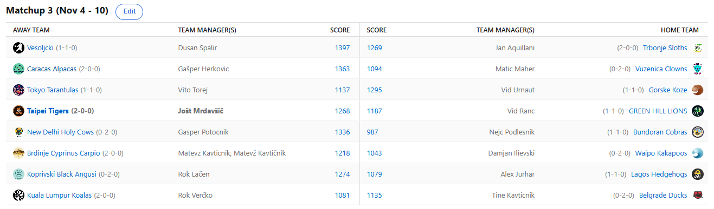

SEZONA 24/25
- Pravila in sistem tekmovanja
- Matchup1 (Oct 22 - Oct 27)
- Matchup2 (Oct 28 - Nov 3)
- Matchup3 (Nov 4 - Nov 10)
- Matchup4 (Nov 11 - Nov 17)
- Matchup5 (Nov 18 - Nov 24)
- Matchup6 (Nov 25 - Dec 1)
- Matchup7 (Dec 2 - Dec 8)
- Matchup8 (Dec 9 - Dec 15)
- Matchup9 (Dec 16 - Dec 22)
- Matchup10 (Dec 23 - Jan 29)
- Matchup11 (Dec 30 - Jan 5)
- Matchup12 (Jan 6 - Jan 12)
- Matchup13 (Jan 13 - Jan 19)
- Matchup14 (Jan 20 - Feb 26)
- Matchup15 (Jan 27 - Feb 2)
- Play-in (Feb 3 - Feb 23)
- Playoff 1 (Feb 24 - Mar 9)
- Playoff 2 (Mar 10 - Mar 23)
- Playoff 3 (Mar 24 - Apr 6)
2024/25 - Fantasy Koroška - sezona 8
MATCHUP 3 (Nov 4 - Nov 10)
Poročilo kroga
Zaključen je tretji teden in nekateri bomo z veseljem že ob malici počastili Martina z deci-deci mešanico, medtem ko boste spet drugi za zmagoslavno nazdravljanje
morali najbrž počakati na Miklavža. Korakamo že v četrti teden ki prinaša tudi dva dni obračunov na hipergrdih igriščih za Emirates Cup,
edino lovoriko ki jo je na stara leta še sposoben osvojiti LeBron.
Saj veste kakšen je tisti znani rek, ki se nam tokrat zdi kar primeren … »če imaš takšne prijatelje, sovražnikov sploh ne potrebuješ«
in zelo natančno opiše ubogega novinca Vida Ranca. Kar 3 tedne mu namreč ni bil sposoben bestič Tine razložiti kako in zakaj se uporablja IR spote.
To je zelenobreške leve drago stalo, pa saj ne da so imeli kakršnekoli možnosti proti Tigersom, a morda bi vseeno lahko začeli sezono 2-1 namesto 1-2.
Zdaj ko so za dalj časa izgubili še Holmgrena bi si morda lahko kdo (ki ne mara videti Matevža brez poraza) vzel čas, da mu razloži kako in kaj se stvarem streže.
Na drugi strani se s tem ni pretirano obremenjeval LM Jole, še tisti kanček slabe vesti je namreč izginil zaradi provokativne slikice,
ki se je postarala slabše kot mleko. Nekoč rjoveči levčki so zdaj v težkem položaju in najbrž jih bo izučilo, da se na starešine ne bevska brez razloga,
3-0 štart Tigrov pa pač ni nič novega in zato tega ne bi preveč izpostavljali.
Tine je bil morda preveč zaposlen s svojim matchupom, nekako .. in najbrž niti sam ne ve kako, mu je uspelo svojo obupno slabo moštvo popeljati do prve zmage!
Čeprav je Martinovo pa njegove Račke očitno (še) niso pečene! Sreča enega pogosto pomeni nesrečo drugega in tako je bilo tudi tukaj, v Kuala Lumpurju so se
ta teden spopadali s toliko O-ji kot otorinolaringolog, pa vendar so bili nekako v igri vse do zadnjega, a niti 85 točk Somborskega konjenika ni bilo dovolj za zmago.
S tem je Rok izgubil 3. mesto in stoodstotni izkupiček, a obliž na rano bo vendarle tretje mesto na sobotnem medpodjetniškem turnirju. Rok je dejal »saj bi ga zmago,
sam pol bi rekli da si organiziram turnir sam zato da ga lahk zmagam«. Zanimiva mentaliteta, ni kaj.
Kontaktiral nas je Samo in malce pojamral, da je vedno vsega kriv ko Black Angusi igrajo slabo, ko pa zmagujejo, kot je bil primer tokrat,
pa vse zasluge pobere Lačen. Pozabili smo ga vprašati, kdo je zadolžen za izbiro prostih igralcev na trgu, tam je po stari navadi moštvo Angusov porabilo že ¼ prihrankov,
a se jim to vsaj izplačalo, Agbaji in Brandon Boston sta namreč med glavnimi igralci. Pa vendar ne bo vsak teden nasprotnik (AS)S-tier moštvo, kot so to Lagos Hedgehogsi.
Zamenjava pickov z neizmerno željo draftati Podziemskega najbrž v obliki nočnih mor še vedno ne da miru Aleksu. Tokrat se je posebej izprsil Brandon in v tem tednu zbral
reci-piši eno točko. Nekdaj strah in trepet lige, danes pa mu algoritmi pripisujejo drugo največ možnosti, da bo moral na piknik prinesti gajbo.
Gre za grozen propad v slogu Delonteja Westa, ali pa ima Aleks še kakšnega asa v rokavu in se uspe vrniti v igro?
Pri nizkih možnostih za playoff ne moremo mimo Kakaposov (62%), ki resda nimajo sreče s poškodbami, pa vendar bo počasi čas za rdeči alarm in posege v moštvo,
če želi Damjan biti še konkurenčen, ko se vrneta Banchero in Dejounte. Če so bili v ponedeljek za poraz Andfita krivi sodniki, pa je vsaj v fantasyju to nepomembnen
faktor in prav zanima nas, kaj bi Dili povedal o tokratnem porazu. Le kdo mu je stal nasproti se sprašujete … potem niste spremljali FB skupine,
kjer kar mrgoli provokativnih sporočil tega managerja. 3-0 štart Matevža je vsekakor z vidika contenta dobrodošel, a počasi bi vendarle lahko nekdo našel šibo,
ki raste za njegovo rit. Smo pa seveda vsi seznanjeni, kaj se bo zgodilo, ko se krivulja Carpia obrne navzdol, namesto za Dall-E bo Mato telefon uporabljal samo še za
metanje po tleh Irman-style.
Uf če bi to bil season1 Cicko, bi najbrž od draftanega rosterja pri Kobrah ostalo bore malo, a tokrat je Nejc očitno prepričan,
da lahko njegovi varovanci zlezejo iz krize in začnejo zmagovati. Vsekakor pod tisoč točk bolj kriči po avspuharskih vodah kot pa »lanski zmagovalec«,
toda le vprašanje časa je bilo, kdaj bo udaril zakon velikih številk še za lansko zdravstveno stanje. Sreča je opoteča in v Bundoranu baje
že iščejo pravo ponudbo za Kyla Kuzmo. Zaenkrat baje vodijo Tigersi, ki so ponudili da ga vzamejo, če Nejc doda še 50$. Svete Krave so bile previsoka ovira,
izvrstna predstava in 3. score tedna za izkušenega stratega Gepsa, ki je tokrat nenavadno malo deloval na FA marketu, očitno je trenutno s svojim moštvom zadovoljen.
Ker zmaga proti Kobram, ki bi jih prej lahko preimenovali v neke belouške, ni nek pretiran dosežek, bomo s superlativi počakali na obračun farmnih živali,
ko se bodo Gepsove Krave udarile s Kozami.
Vid, ki si trenutno lasti kar 2 iz peterice top pickov v zadnjih rundah, ki mu lahko prinesejo tudi denarno nagrado,
je tudi tokrat zabeležil zmago in to zapoznelo rojstnodnevno darilo mu prinaša izvrstno 5. mesto po treh krogih.
Zdaj ko je eden izmed njegovih zapornikov odsoten je to moštvo nekoliko manj nevarno na pogled, ampak če te ne zlomijo na ulici,
še ne pomeni da te ne zlomijo na igriščih. Moč Koz so tokrat občutile Tokijske Tarantele. Da ga na svetu ni fizioterapevta,
ki lahko Vitov big3 ohrani zdrav skozi celo sezono smo itak vedeli, da pa bo popustil in brez pravega timetabla izgubil Ziona že tako zgodaj pa …
no smo tudi vedeli. Lahko Vito, ki mu je začetna trial verzija začetniške sreče prinesla zgolj eno zmago to oviro preskoči in kljub temu sestavi dobro sezono?
Norman Powell žal ni zmogel sam in po tem bolečem porazu bomo prihodnji teden videli, ali lahko »addition by substraction« deluje za Lenivce približno
tako dobro kot za Clipperse? Izguba KD-ja in Moranta je bila prevelik primanjkljaj za Jana, ni pa pomagalo niti dejstvo,
da so Vesoljčki na drugi strani nadvse želeli osrečiti svojega managerja Dušana ob njegovem osebnem jubileju. Ligo lahko skrbi dejstvo,
da se Vesoljčki zdijo, kot da imajo še veliko rezerve in če se Dušanov sloves bolnišnice iz prejšnjih sezon ne pokaže tudi letos, je morda
lahko to končno sezona, ko na stopničkah vidimo moštvo z drugega planeta?
Ostal nam je le še obračun, za katerega smo že ob pogledu na trenutno lestvico vedeli, da zanimiv ne bi smel biti.
Prvi Herko proti zadnjemu Maherju. Kot pijanc plota se Maher drži tega zadnjega mesta in zakaj mu je tam tako všeč nas
resnično zanima, nekako dvomimo, da je tam neprostovoljno. Alpake se kaj dosti nimajo za pritoževati, dokaj lagan 3-0 štart
in prvo mesto bo Gašperju vsekakor po godu, toda pravi preizkusi še pridejo.
Kaj nas čaka v četrtem tednu? Najbolj nas zanima, ali lahko Ranc nagrunta princip IR-ja, rezultatsko pa bo najbolj
zanimiv najbrž derbi med Alpakami in Vesoljčki, ki trenutno kažejo najboljšo formo. 843$ je bilo do zdaj že porabljenih na FA marketu,
po nekoliko mirnejšem tretjem tednu, ko urnik ni dopuščal pretiravanja, pa bo znova zelo zanimivo zdaj in res nas zanima,
kaj sta nam ta teden pripravila Samo in Rok. Za slednjega pa le še pobožna želja, da gre sanacija poškodbe gležnja hitreje kot sanacija glavne ceste Ravne-Dravograd.
Srečno vsem in ne pozabite na predictione 8)